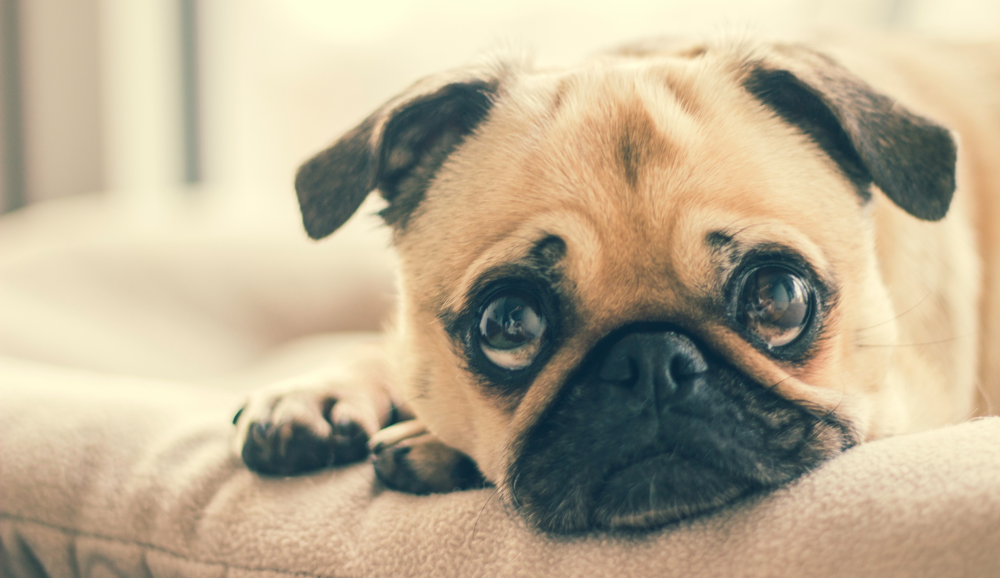

Digital-School
Willkommen auf HW :)
Wilkommen auf HW :)
Hunde website/Hunde wikipedia

mehr Hundewebsiten habe ich hier verlinkt :D
Gut für sie, gut für ihren Hund.
Ein Hundetagebuch
Ein Hundeshop
Vier Pfoten in Deutschaland
Hundetest & Hundefutter purina
ÜBER MICH ;D
Hallo, hier spricht HW,(Simon) ich bin 9 und bin Hunde Fan.
Ich habe ich mit html meine erste Website programmiert und zwar HW bzw diese Seite.
Aber natürlich habe ich es nicht gaaaaanz aleine gemacht sondern mein vater und der Berlitz Programmier kurs hat mir geholfen.
Außerdem habe ich viel gespiel und dabei Musik (bayern 3) gehört.
jetzt rede ich aber kein bla bla mehr, sonder fange jetzt an, also...VIEL SPASS :DDD
Der Mops
größe: 30cm.
Umgebung: gut für Wohnungen.
Rasse: Schnauzer.
Farbe: apricosen Gelb mit schwarzer,silber
Maske und Hellfarben.
Ursprung: China
Patronat: Großbritannien
Der Golden Retriever
größe: mann= 56-61 Frau= 51-56
Ursprung: Vereinigtes Königreich, Schottland, England
Jahre: 10-12
Dunkelgolden, Hellgolden, Creme, Golden
Der Dackel
Jahre: 12-16
Gewicht: Obergreze etwa 9kg
Herkunft: Deutschland
Farben: Schwarz, Schwarz und Loh, Chocolate
& Tan, Blau und loh, Brauntiger, Creme, Loh, Rot
Der Zwergspitz
Jahre: 12-16
größe: 20cm
Gewicht: 1,9 – 3,5 kg (Erwachsener)
Farben:Weiß, Schwarz, Blau, Rot, Graugewolkt, cremefarben, Loh, Orange, Braun
Graugewolkt, cremefarben, Loh, Orange, Braun
Herkunft: Polen, Deutschland
Der Deutscher Schäferhund
Jahre: 9-13
größe: Mann: 60-65 Frau: 55-60
Gewicht: Mann: 30-40cm Frau: 22-32
Farben:Schwarz, Schwarz und Loh, Sable, Rot mit schwarzem Mantel, Grau, Schwarz-silber
Herkunft: Deutschland
Der Chinessischer Schopfhund
Jahre: 13-15
größe: Mann: 28-33cm Frau: 23-30cm
Gewicht: Mann:2,3–5,4 kg Frau: 2,3–5,4 kg
Farben: Schwarz, Apricot, Schokoladenbraun,
Creme, Dreifarbig, Blau
Herkunft: China
Patronat: Großbritannien
Der Hovawart
Jahre: 12-14
größe: Mann: 63-70 Frau: 58-65
Gewicht: Mann: 25-40 Frau: 25-40
Farben: Schwarzmarken, Schwarz, Blond.
Herkunft: Deutschland, Schwarzwald.
Chihuahua
Jahre: 12-20
größe: 15-23cm
Gewicht: 1,5-3kg
Farben: Weiß, Schwarz, Rehfarbe, Schokoladenbraun, Creme, Gold
Herkunft: Mexiko
Der Deutsche Pischer
Jahre: 12-14
größe: 43-51cm
Gewicht
Umgebung: 11-20kg
Rasse:
Farbe: Schwarz, Rehfarbe, Braun, Blau, Rot.
Ursprung: Deutschland
Die Bulldogge
größe: Olde English Bulldogge: 43 – 51 cm,
American Bulldog: 56 – 64 cm, Ca de Bou: 55 – 58 cm, Alano Español: 58 – 64 cm
Jahre: Englishe: 8-10 Espanol: 11-14 Olde Englishe: 9-14
Franzö Buldogge: 8-14 American: 10-15
Farbe: Weiß, Rehfarbe, Piebald, Gestromt und weiß, Rehfarben und weiß, Rot-weiß, Rot, Rot-
Gewicht: Englishe: 23kg Espanol: 34-40kg Olde Englishe: 27-36kg
American: 30-58kg Ca de bou: 35-38
Ursprung: Vereinigtes Königreich, England
Das Italienische Windspiel
größe: 33-38cm (Erwachsener, Widderisthöhe)
Jahre: 12-15
Farbe: Schwarz, Blue Fawn, Rehfarbe, Schokoladenbraun,
Loh, Sable, Rotsandfarben, Slate Grey, Grau, Blau, Rot, Gelb
Gewicht: 3,6-5kg
Ursprung: Italien